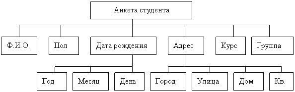

|
Как мы уже выяснили, массивы объединяют однородные единицы
информации – элементы одного и того же типа. Но многообразие
информации нельзя свести только к какому-то одному типу данных.
Например, указывая положение точки в пространстве, мы можем
воспользоваться одним и тем же типом для указания ее координат,
но, описывая человека, мы должны указать его имя, рост, цвет
глаз и волос, то есть в одном описании объединим разнородную информацию.
Точно так же, описывая автомобиль, мы укажем не только его
марку, но и год выпуска, модификацию, да и цвет кузова может нас
заинтересовать. Составляя автоматизированный каталог
книгохранилища, мы для каждой книги должны указать ее название,
имя автора, область знания, количество страниц, год издания, а
также, возможно, признак нахождения на руках или в хранилище.
Данные такого рода, описывающие существенные стороны того или
иного объекта путем включения в описание нескольких, часто
разнотипных, элементов, называют записью
(record). В языке Паскаль
запись определяется путем указания служебного
слова record и
перечисления входящих в запись элементов с указанием типов этих
элементов.
Запись Паскаля –
структурированный комбинированный тип данных, состоящий из
фиксированного числа компонент (полей) разного типа.
Например, анкетные данные о студенте вуза могут быть
представлены в виде информационной структуры
Такая структура называется двухуровневым деревом. В Паскале эта
информация может храниться в одной переменной типа record
(запись). Задать тип можно следующим образом:
type <
имя _ типа
>=record
<имя_поля1>:
тип;
<имя_поля2>:
тип;
………………….
<имя_поля K >:
тип
end ;
где record – служебное слово, а <имя_типа> и <имя_поля> -
правильные идентификаторы языка Паскаль.
Описание анкеты студента в Паскале будет выглядеть так:
Пример фрагмента программы описания записи Паскаля
Type anketa=record
fio: string[45];
pol: char;
dat_r: string[8];
adres: string[50];
curs: 1..5;
grupp: string[3];
end;
Такая запись Паскаля, так же как и соответствующее ей дерево,
называется двухуровневой.
Поля записи Паскаля могут иметь любой тип, в частности сами
могут быть записями. Такая возможность используется в том
случае, когда требуется представить многоуровневое дерево (более
2 уровней). Например, те же сведения о студентах можно
отобразить трехуровневым деревом.

Такая организация данных позволит, например, делать выборки по
году рождения или по городу, где живут студенты. В этом случае
описание соответствующей записи в Паскале будет выглядеть так:
Пример фрагмента программы описания записи Паскаля
Type anketa1=record
fio: string[45];
pol: char;
dat_r: record;
god: integer;
mes: string[10];
den: 1..31;
end;
adres: record
gorod: string[25];
ulica: string [20];
dom, kv: integer;
end;
curs: 1..5;
grupp: string[3];
end;
Поля
После того, как определен тип записи Паскаля, можно определять
переменную этого типа. Переменная определяется путем задания ее
идентификатора и указания типа.
var
student: anketa;
student 1:
anketa 1;
Теперь нам нужно узнать, как правильно получать доступ к
элементам записи Паскаля. Элементы записи называются полями, а
обращение к ним производится через использование их имен –
идентификаторов полей. Практически, поля записи обрабатываются
точно так же, как и любые другие переменные. Но в отличие от
обычной переменной имена полей должны предваряться ссылкой на
идентификатор записи Паскаля и отделяться от него точкой. Такая
запись называется уточняющий идентификатор:
<имя_записи>.<имя_поля>
Например, чтобы обратиться к полю curs переменной student ,
необходимо указать следующее составное имя:
student.curs :=3;
Для того чтобы обратиться к полю god в записи student 1,
необходимо записать уточняющий идентификатор, состоящий из трех
имен:
student1.dat_r.god:=1982;
Использование полей записи Паскаля в выражениях и условиях
идентично использованию обычных переменных.
Операции над записями Паскаля (это важно!)
Единственная операция, которую можно произвести над однотипными
записями Паскаля – это присваивание.
Все другие операции производятся над отдельными полями записи.
Пример решения задачи с использованием записей Паскаля
Рассмотрим для начала простейший пример заполнения записи
Паскаля и вывода ее на экран.
Пусть нам необходимо заполнить сведения о студенте (Ф.И.О., дата
рождения, адрес, курс и группа), а затем вывести эти сведения на
экран.
Пример программы c записью Паскаля
program primer1;
type anketa=record
fio: string[45];
dat_r: string[8];
adres: string[50];
curs: 1..5;
grupp: string[3]
end;
var student: anketa;
begin
writeln ('введите
сведения о студенте');
writeln ('введите
фамилию, имя и отчество');
readln (student.fio);
writeln ('введите
дату рождения');
readln (student.dat_r);
writeln ('введите
адрес');
readln(student.adres);
writeln ('введите
курс');
readln(student.curs);
writeln ('введите
группу');
readln (student.grupp);
writeln ('ввод
закончен');
writeln ;
writeln ('фамилия
студента: ', student . fio );
writeln('
дата рождения : ', student.dat_r);
writeln('
адрес : ', student.adres);
writeln('
курс : ', student.curs);
writeln('
группа : ', student.grupp);
end.
А теперь слегка усложним задачу. Пусть нам необходимо иметь
сведения о многих студентах, например, нашего факультета.
Следовательно, необходимо организовать массив записей Паскаля. А
затем из общего списка вывести фамилии студентов 2-го курса.
Пример программы c записью Паскаля
program primer 2 ;
type anketa=record
fio: string[45];
dat_r: string[8];
adres: string[50];
curs: 1..5;
grupp: string[3]
end;
var student: array [1..100] of anketa;
I: integer;
begin
for I:=1 to 100 do
begin
writeln ('введите
сведения о', I , '-м
студенте');
writeln ('введите
фамилию, имя и отчество');
readln (student[I].fio);
writeln ('введите
дату рождения');
readln (student[I].dat_r);
writeln ('введите
адрес');
readln(student[I].adres);
writeln ('введите
курс');
readln(student[I].curs);
writeln ('введите
группу');
readln (student[I].grupp);
end;
writeln ('ввод
закончен');
writeln ;
for I:=1 to 100 do
if student[I].curs=2 then
writeln('
фамилия студента : ', student[I].fio);
end.
Оператор присоединения или как избавиться от префикса
Префикс – обязательная предшествующая часть составного
идентификатора для имен полей в структуре типа запись Паскаля.
Очень часто у программиста возникает желание не указывать
префикс в имени полей, например, когда идет постоянное
использование одних и тех же записей. В языке Паскаль
предусмотрена такая возможность, реализуемая при помощи
оператора присоединения, который в общем виде выглядит так:
with <имя_записи> do <действие
с полем записи>;
Следует обратить внимание на то, что после служебного слова do
может стоять только один оператор, но он может быть составным
(любая последовательность операторов, заключенная в операторные
скобки begin end ).
Например, фрагмент из предыдущей программы с использованием
оператора присоединения будет выглядеть так:
Пример фрагмента программы c записью и префиксом Паскаля
for I:=1 to 100 do
with student[I] do
begin
writeln ('введите
сведения о', I , '-м
студенте');
writeln ('введите
фамилию, имя и отчество');
readln (fio);
writeln ('введите
дату рождения');
readln (dat_r);
writeln ('введите
адрес');
readln(adres);
writeln ('введите
курс');
readln(curs);
writeln ('введите
группу');
readln (grupp);
end;
|